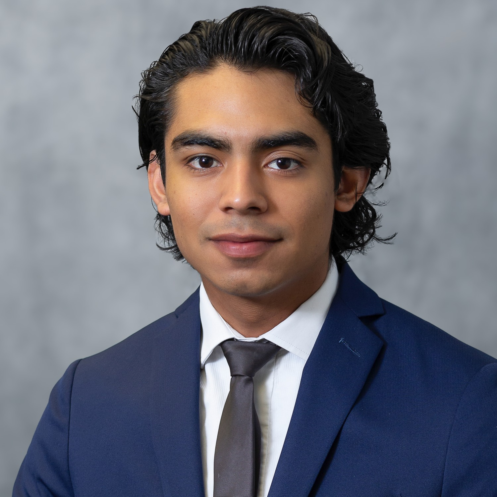
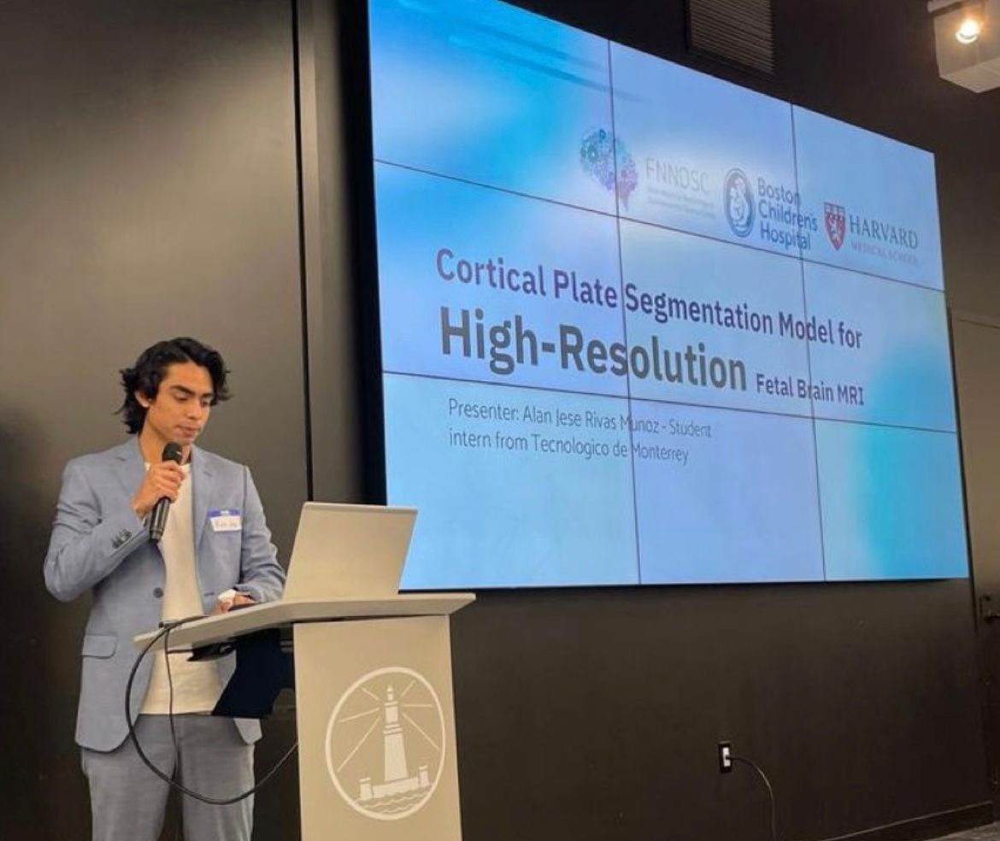
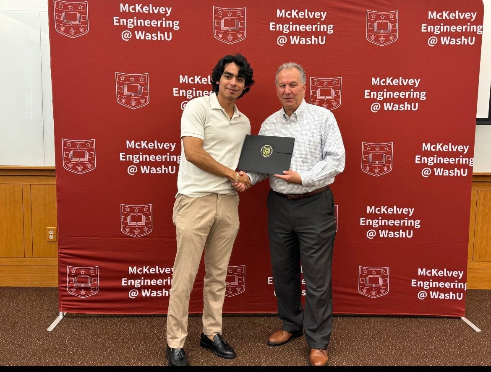
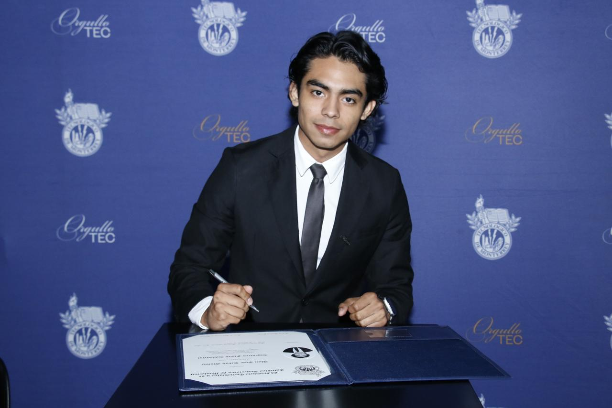
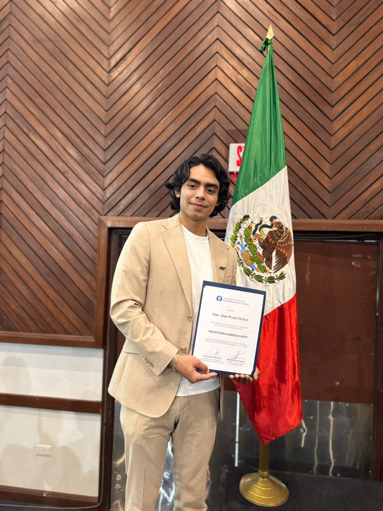

Nuclear Medicine
Research experience in SPECT reconstruction, quantitative imaging, and nuclear medicine workflows.

Physics Engineering | Imaging Science | Founder
Biomedical Engineering Ph.D. student and physics engineer working at the intersection of nuclear medicine imaging, AI evaluation, and translational research.
About
I am a Biomedical Engineering Ph.D. student with a background in Physics Engineering, nuclear medicine research, AI data evaluation, and entrepreneurship. My work is driven by a practical question: how can advanced computational tools become reliable enough to improve real scientific and clinical workflows?
My path has combined international research experiences, hands-on technical work, and the resilience of building while studying. I bring scientific rigor, adaptability, and a founder's bias for turning complex ideas into usable systems.
Research experience in SPECT reconstruction, quantitative imaging, and nuclear medicine workflows.
Founder experience turning an idea into a real food business in Monterrey.
Astronomy and physics keep my technical work connected to wonder.
Experience

Worked on AI data quality and model evaluation workflows, helping improve the reliability of advanced AI systems through careful review, reasoning, and feedback.

One-year international internship at FNNDSC, including a presentation on high-resolution fetal brain MRI cortical plate segmentation.

International summer internship at the McKelvey School of Engineering.

Founder of a fast food SME in Monterrey, built while balancing a demanding degree.

One of my biggest passions, and a constant source of scientific perspective.
Education
Ph.D. in Biomedical Engineering.

B.S. Industrial Physics Engineering, with focus in imaging science and entrepreneurship.

Degree SigningAwards
Selected for the SNMMI student research grant supporting nuclear medicine imaging research development.

Recognized for outstanding academic trajectory among engineering students at Tec.
Get In Touch
Send a message or reach me directly. I am especially interested in nuclear medicine imaging, applied physics, health technology, and entrepreneurship.